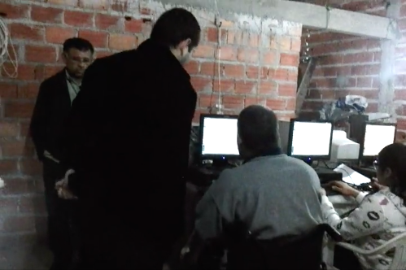
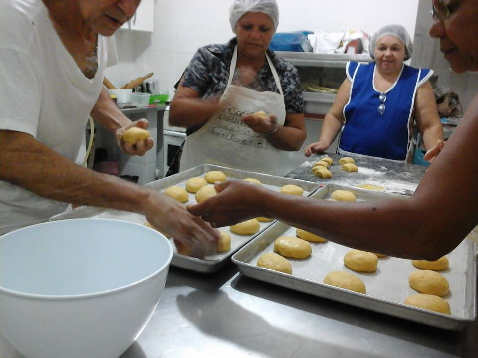

Cursos
Aprender nunca é demais!
Alguns cursos são oferecidos pela ONG, mas não tem períodos fixos de ocorrer,
as salas são montadas de acordo com a disponibilidade de voluntários,
material
e interesse dos alunos.

Informática Básica
Curso ensina os conceitos básicos para o uso do computador e passa pelas ferramentas do libre Office. Sistema operacional utilizado é o Ubuntu.
Curso Gratuito

Patchwork
Uma das Fundadoras da ONG ainda leciona técnicas que aprendeu em outros cursos e com a própria experiência ao participar de eventos de artesanato.
Curso Gratuito

Padaria
O curso mais recente da ONG ensina como fazer pães do dia a dia e algumas receitas próprias.
Curso Gratuito